Chosen direction · the run through Lanka, stage by stage
Camera behind Hanuman, three lanes, swipe to dodge. From the street where he is spotted, up the steps, through the palace, to Sita and the fire.
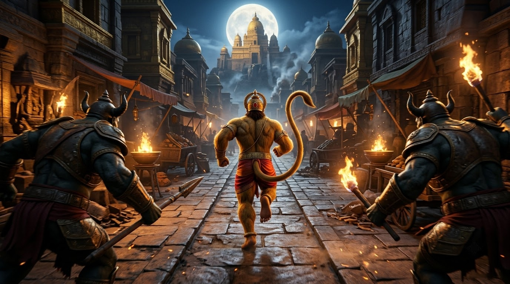
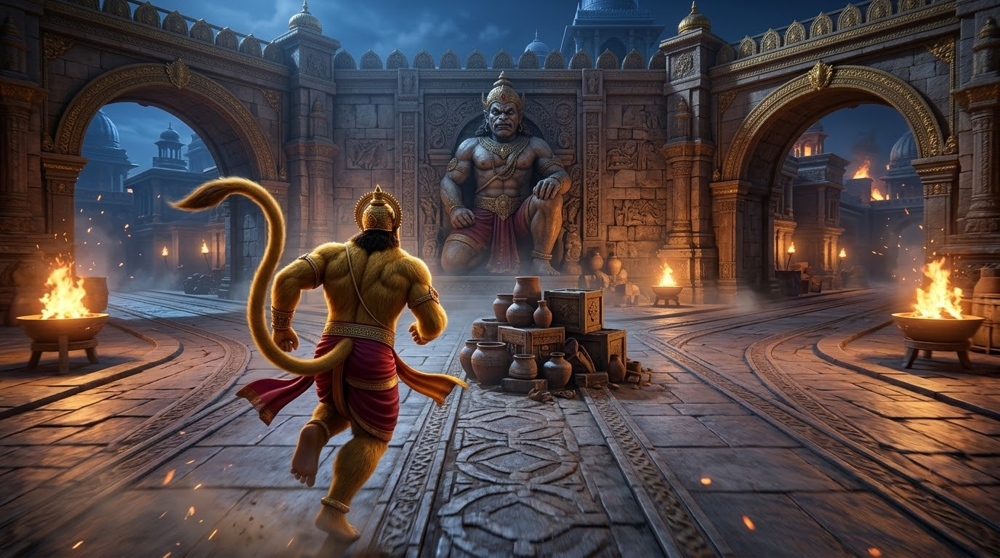
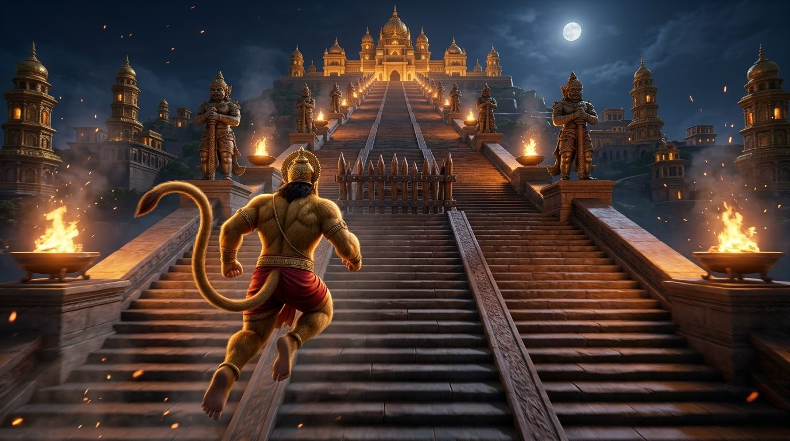
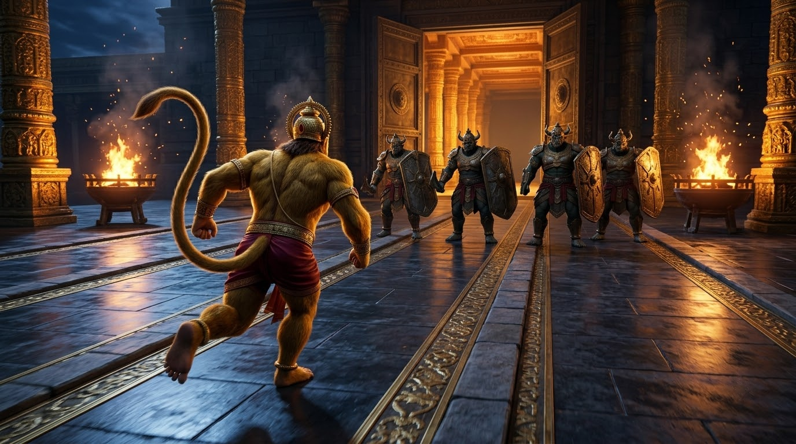
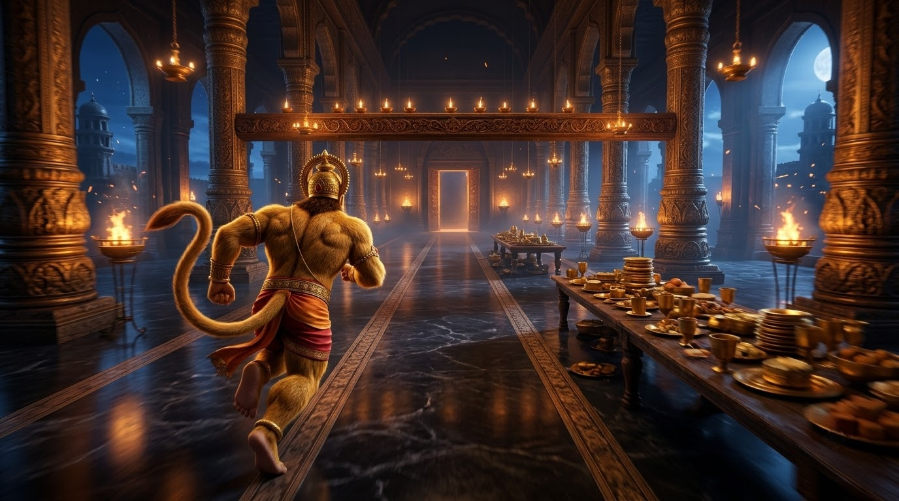
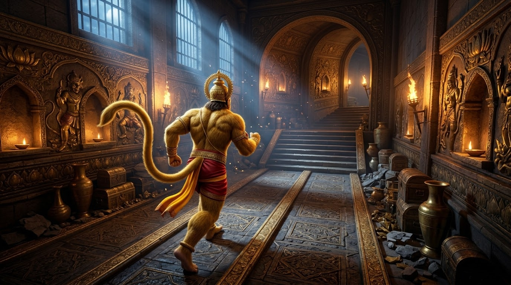
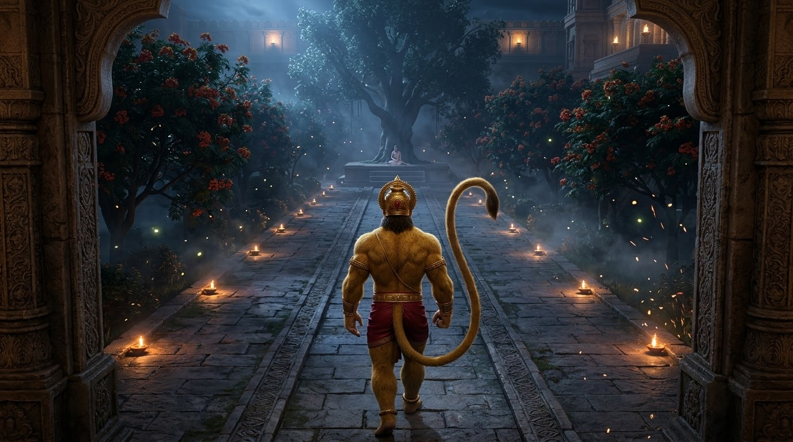
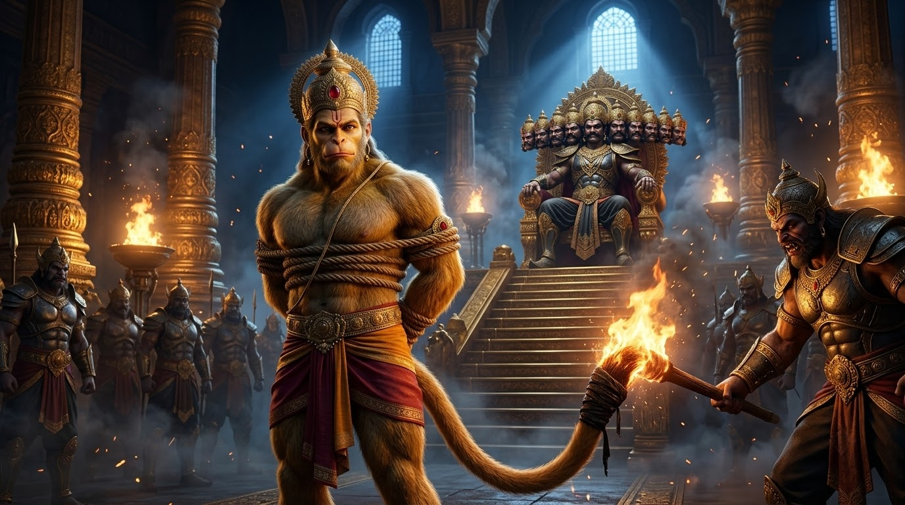
The route from above
Sea gate at the bottom, bazaar street, the grand stairway, Ravana's palace at the top, the Ashoka grove behind it.
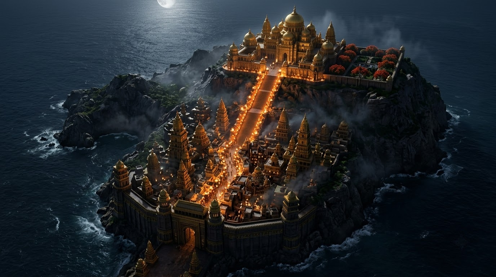
A · Bazaar street
Camera low behind Hanuman. Narrow torch-lit street, lanes to switch, obstacles to jump and slide.
B · Rooftops
Camera behind and above. Leaping roof to roof over the city, palace on the hill ahead.
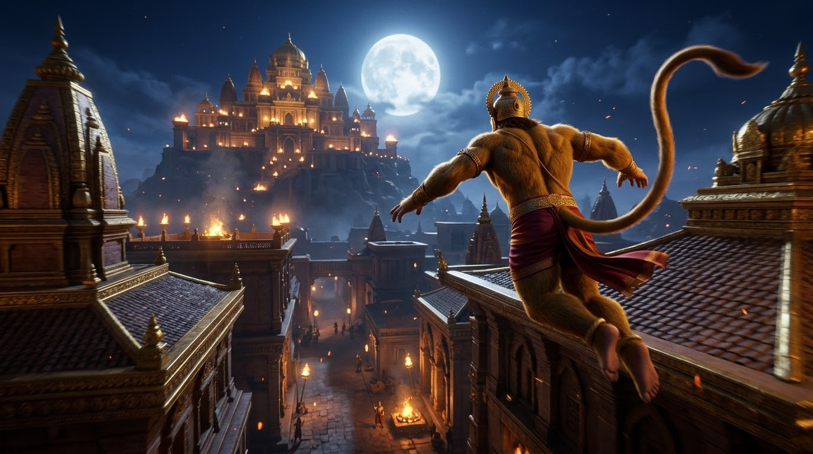
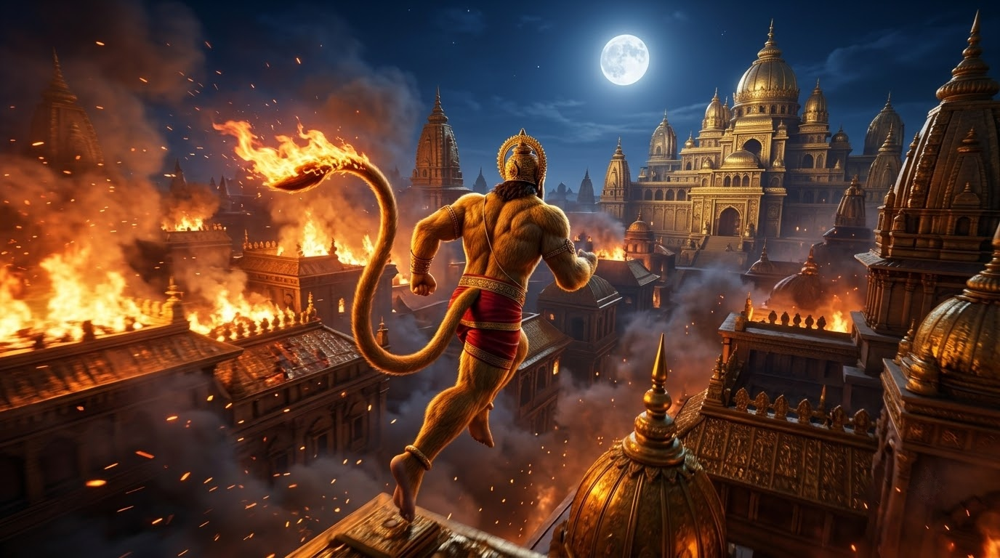
C · Side view
Camera side-on like a film. Layers of city behind, guards chasing in frame.
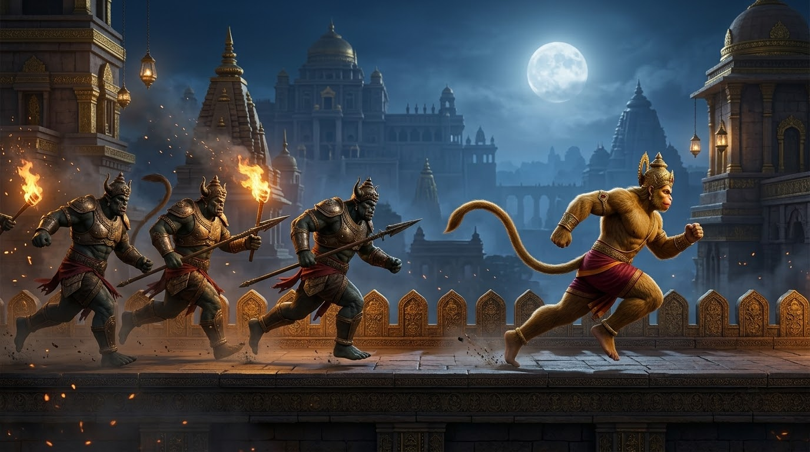
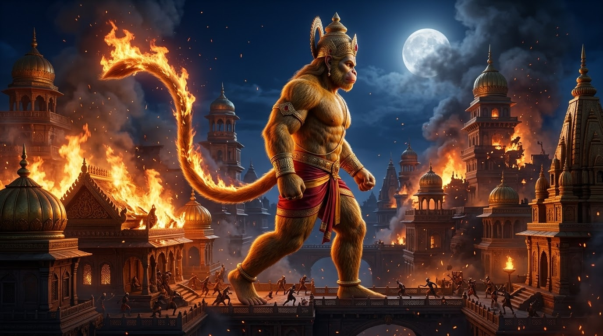
D · Royal avenue from above
Camera high. Wide avenue, statues, squads of guards, the whole city grid visible.
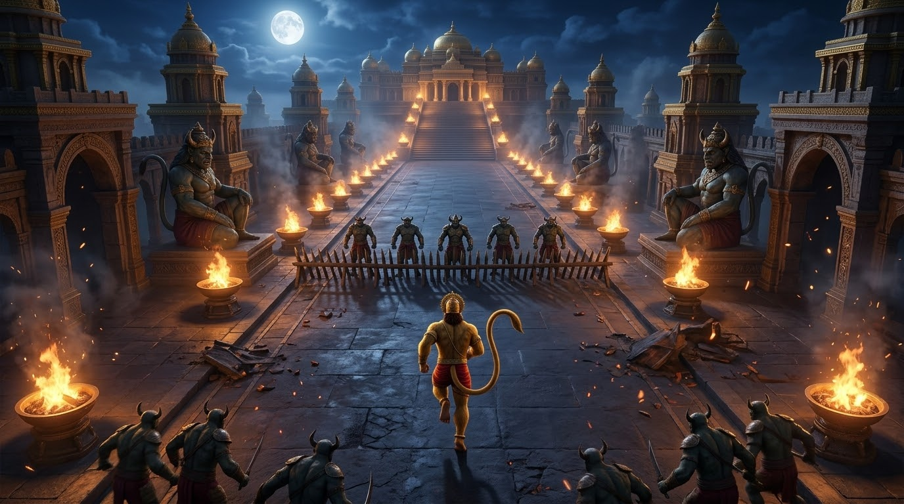
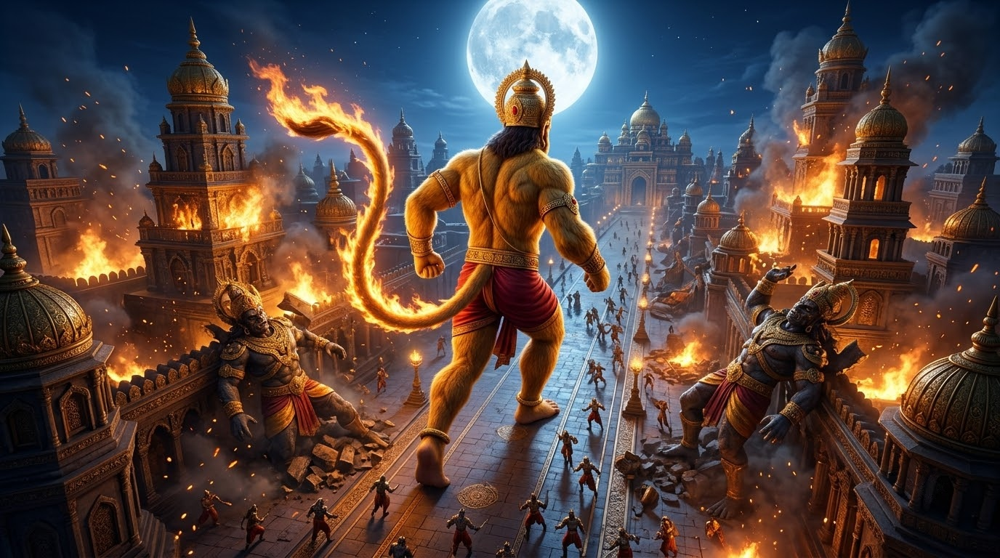
Story moments (same in every design)
The quiet meeting with Sita and the final escape.
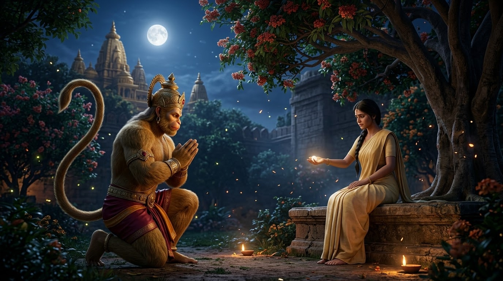
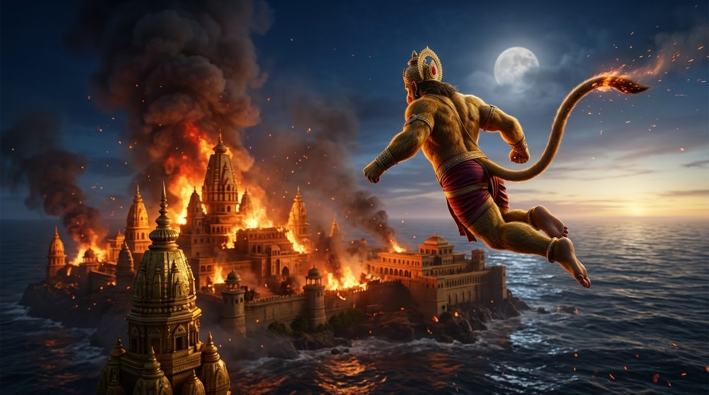